In Vivo
To understand whether JS-1 is also effective in vivo, we conducted an experiment via animal model to observe physiological changes.
We used IMQ-induced Psoriasis-like mice model to test the JS-1’s efficacy. We observed the morphology changes (ear appearance), clinical score (psoriasis area severity index, calculation score on the ear erythema, ear thickness, ear scaling, histological micro-scale measurement (ear epidermis thickness(mm) and ear epidermis proliferation layers) and cytokine array (IL-23 and VEGF) to evaluate the JS-1’s efficacy.
To conclude, JS-1 shows great efficacy on IMQ-induced Psoriasis-like mice model.
III. JS-1 as Treatment for IMQ-induced Psoriasis
The IMQ was smeared on mice’s ear to induce psoriasis [1], and once the symptoms appeared, JS-1 was soon intraperitoneally injected (100 mg/kg) once per day for five days to treat the disease (Figure. H-2 and H-3). We conducted this experiment twice on two different strains of mice, including C57BL/6 mice (8–10 weeks old, male, n=5) and BALB/c mice (8–10 weeks old, male, n=6).
 Figure. H-1. Imiquimod-induced psoriasis-like skin Inflammation in mice ears.
Figure. H-1. Imiquimod-induced psoriasis-like skin Inflammation in mice ears.
Observation Topic
-
1. Clinical Score: Psoriasis Area Severity Index(PASI)
We applied Psoriasis Area Severity Index (PASI score is a tool used to measure the severity and extent of psoriasis. It takes a few minutes and experience to calculate it accurately. A representative area of psoriasis is selected for each body region. The intensity of redness, thickness and scaling of psoriasis is assessed as none (0), mild (1), moderate (2), severe (3) or very severe (4) [2, 3]) to evaluate the treatment process in the experiment.
Mice were evaluated daily for inflammation in the ears as described above. The severity and incidence of the psoriasis-like skin manifestations were monitored on a scale ranging from 1 to 3 per mouse based on the severity of skin scaling on the ears: 1, weak skin peeling; 2, moderate skin peeling; and 3, heavy skin peeling with some hair loss.
We calculated clinical scores on erythema, ear thickness and ear dermis scaling every day of induction period, also on the first, third, and fifth day of the treatment. The outcome presented the therapeutic effect with statistical significance after the mice being treated with JS-1.
-
2. Morphology and histology analysis
Mice were sacrificed on the fifth day for the observation of the ear appearance and tissue biopsy (H&E stain). We used micro-scale measurements to evaluate the ear epidermis thickness (mm), and the ear epidermis proliferated layers (Figure. H-6 and H-8). The results showed that JS-1 significantly reduced the proliferation of the epidermis layers, indicating that the treatment can regulate the inflammatory molecules in the immune cells.
-
3. Cytokine array
After comparing the IL-23 (key cytokine of psoriasis) and the VEGF (angiogenesis factor) [4] of the Treatment Groups with those of the Control Group, we found there were statistically significant differences.
- van der Fits L, Mourits S, Voerman JS, Kant M, Boon L, Laman JD, Cornelissen F, Mus AM, Florencia E, Prens EP, Lubberts E., Imiquimod-induced psoriasis-like skin inflammation in mice is mediated via the IL-23/IL-17 axis., J Immunol. 2009 May 1;182(9):5836-45. doi: 10.4049/jimmunol.0802999.
- Ashcroft DM, Br J Dermatol. 1999 Aug;141(2):185-91., Wan Po AL, Williams HC, Griffiths CE., Clinical measures of disease severity and outcome in psoriasis: a critical appraisal of their quality.
- Smith C, Anstey A, Barker J, Burden A, Chalmers R, Chandler D, et al. British Association of Dermatologists' Guidelines for Biologic Interventions for Psoriasis. Br J Dermatol. 2009;161:987–1019.
- Leslie van der Fits, Sabine Mourits, Jane S. A. Voerman, Marius Kant, Louis Boon, Jon D. Laman, Ferry Cornelissen, Anne-Marie Mus, Edwin Florencia, Errol P. Prens, Erik Lubberts.The Journal of Immunology May 1, 2009, 182 (9) 5836-5845
Mice model experiment
1. First Experiment on C57BL/6 mice
In the beginning, we conducted experiments on three separate groups of C57BL/6 mice (8 weeks, male, which were respectively Normal, Saline, and JS-1 (100 mg/kg). Our observation topic focused on Morphology--ear appearance and Histology--ear epidermis thickness (mm) and ear epidermis layer.
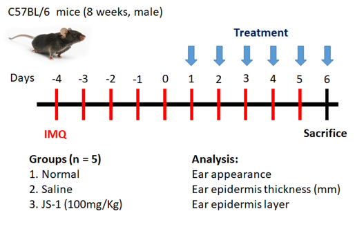 Figure. H-2. Scheme of animal study (C57BL/6) design.
From day -4 to 5, we applied IMQ on mice’s ears to induce the psoriasis symptoms. From days 1 to 5, we injected (i.p.) a dose of saline and JS-1 separately into the control groups. On day 6, we sacrificed the mice and analyzed the changes in morphology and histology.
2. Second Experiment on BALB/c mice
Considering that in the previous mice experiment the erythema was difficult to observe, we adopted BALB/c mice (8 weeks, male, n=6) for the same experiment. This time, we added a Quercetin group (50 mg/kg), a small molecular HuR inhibitor, to compare its therapeutic efficacy with that of JS-1.
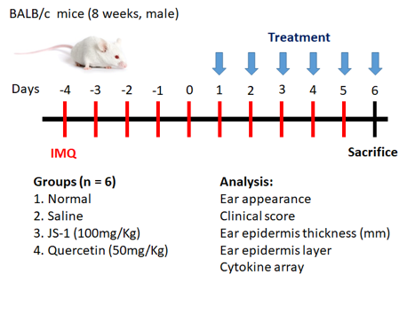 Figure. H-3. Scheme of animal study (BALB/c)
We observed morphology--ear appearance and histology--ear epidermis thickness (mm) & ear epidermis layer, and furthermore used clinical score to track the daily changes. Besides, we also used cytokine array to analyze IL-23 (a key cytokine of psoriasis) and the VEGF (angiogenesis factor).
(1) Morphology observation
After 5-day treatment, there were significant therapeutic effects showed on the ear appearance of JS-1 (100 mg/kg) group (Figure. H-4).
Figure. H-4 Therapeutic effects of JS-1 (100 mg/kg) on C57BL/6’s ears.
After 5-day treatment, there were significant therapeutic effects showed on the ear appearance of JS-1 (100 mg/kg) group (Figure. H-5).
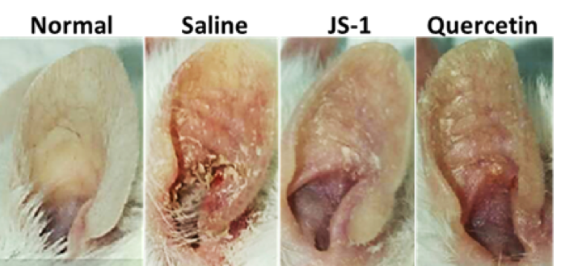 Figure. H-5 Therapeutic effects of JS-1 (100 mg/kg) on BALB/c’s ears.
(2) Histological analysis
Taking ear skin biopsy with H.E stain (Figure. H-6a), we evaluated the differences of ear epidermis thickness(mm) (Figure. H-6b) and the layers of cell proliferation in the dermis (Figure. H-6c) via micro-scale measurements. The data both revealed statistically significant differences(P< 0.0001, ****), which showed JS-1 significantly alleviated the psoriasis-like dermatitis.
 Figure. H-6a.
Figure. H-6a.
Figure. H-6b.
Figure. H-6c.
Figure. H-6. JS-1 alleviates psoriasis-like dermatitis. (a) Sections of ear skin(H&E stain) (b) Epidermal thickness and (c) the layers of cell proliferation in the dermis were measured using the ruler of the microscope on day 6 after treatment.
After taking ear skin biopsy for H&E staining (Figure. H-7a), we evaluated the differences in the ear epidermis thickness (mm)(Figure. H-7b) and the layers of cell proliferation in the dermis (Figure. H-7c) via micro-scale measurements. The data all revealed the significant improvement.
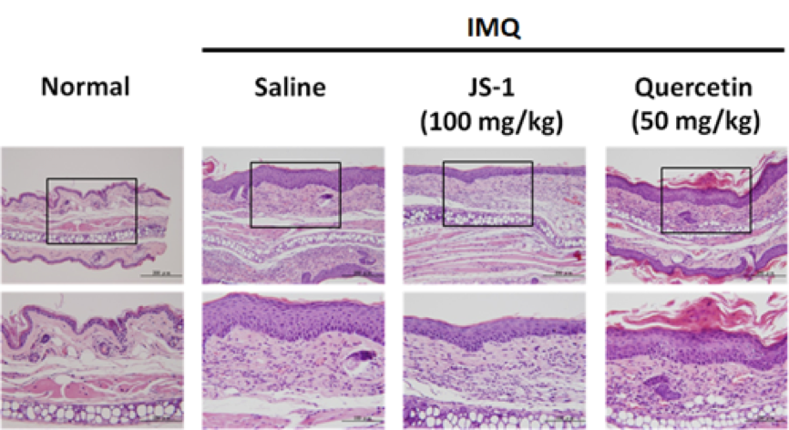 Figure. H-7a.
a. epidermis thickness(mm)
JS-1 v.s. saline (P< 0.0001, ****), and quercetin v.s. saline ( P= 0.0003, ***) are both significant; meanwhile, JS-1 v.s. quercetin (P= 0.0692, ns) revealed that JS-1 has similar efficacy as quercetin in this score.
b. the layers of cell proliferation in the dermis
JS-1 v.s. saline (P< 0.0001, ****), and quercetin v.s. saline ( P= 0.0081, **) are both significant; meanwhile, JS-1 v.s. quercetin (P= 0.0014, ** ) shows that JS-1 has better efficacy in this score.
Overall, JS-1 significantly alleviates psoriasis-like dermatitis in mice.
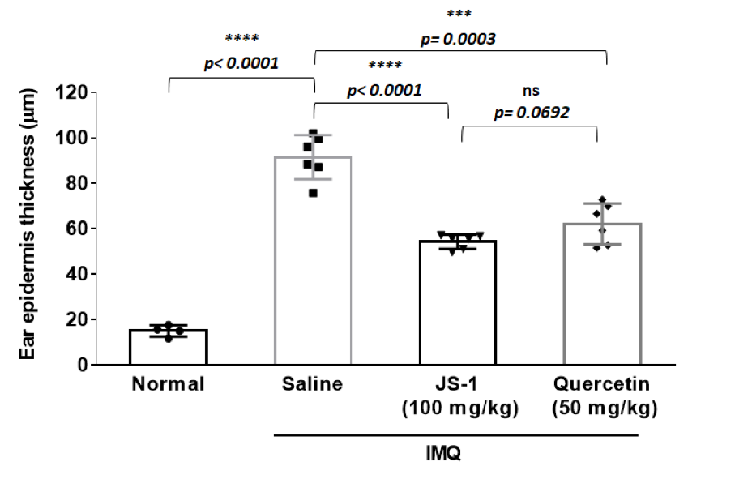 Figure. H-7b.
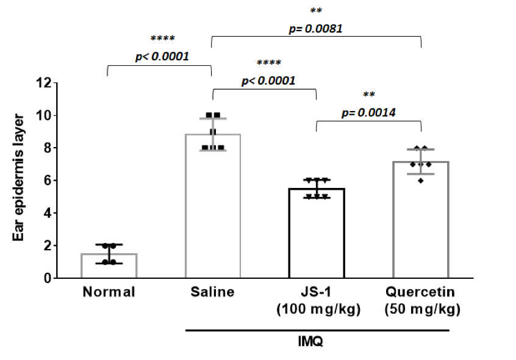 Figure. H-7c.
Figure. H-7. JS-1 alleviates psoriasis-like dermatitis. (a) Sections of ear skin(H&E stain) (b) Epidermal thickness and (c) the layers of cell proliferation in the dermis were measured using the ruler of the microscope on day 6 after treatment.
(3) Clinical score
We calculated the clinical scores on erythema, ear thickness, scaling every day during drug administration (Figure. H-8).
The data revealed that there is a downswing trend for the treatment group, meaning that JS-1 can certainly alleviate the IMQ-induced psoriasis-like dermatitis. What’s more, JS-1 has better efficacy than Quercetin.
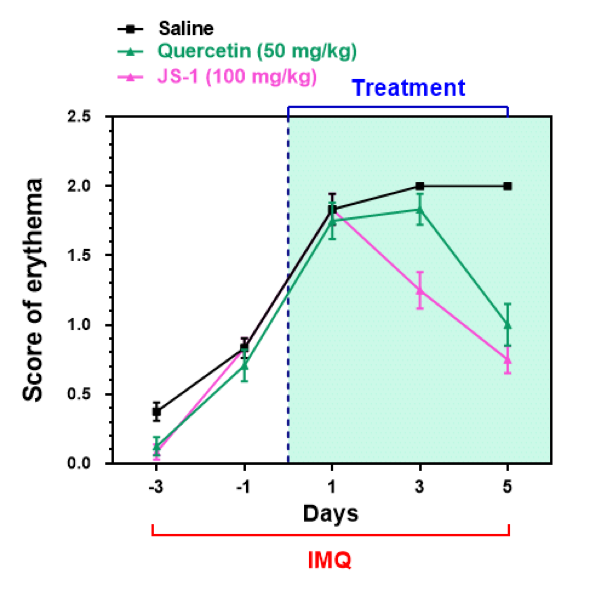 Figure. H-8a. Clinical scores on erythema.
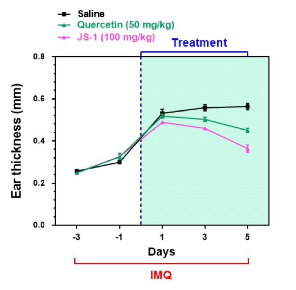 Figure. H-8b. Clinical scores on ear thickness.
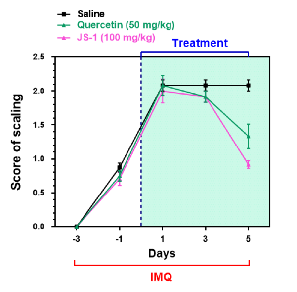 Figure. H-8c. Clinical scores on scaling.
Figure. H-8. JS-1 ameliorates psoriasis pathogenesis and has better therapeutic efficacy than Quercetin.
(4) cytokine array
We further used cytokine array to validate our results, comparing the differences in the IL-23 and VEGF expressions(Figure. H-9). The data revealed significant difference, proving that JS-1 really performed as we expected.
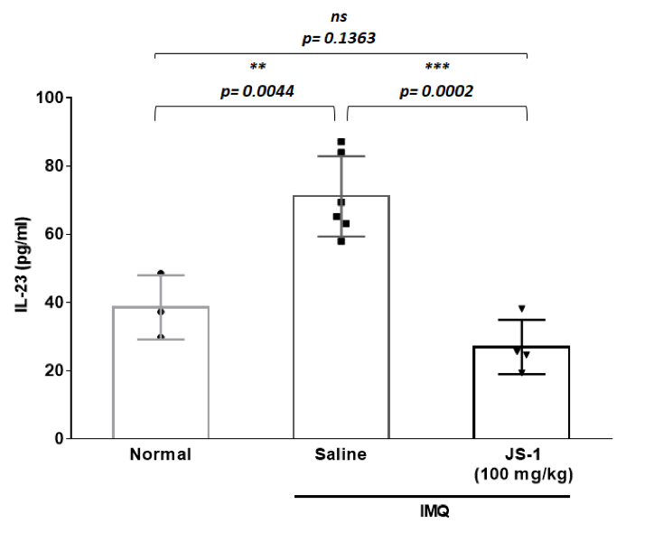 Figure. H-9a.
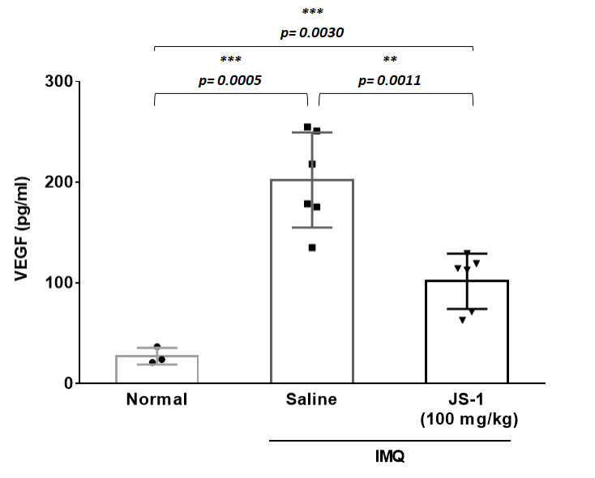 Figure. H-9b.
Figure. H-9. Downstream inflammatory molecules are reduced after JS-1 treatment.
Reference: